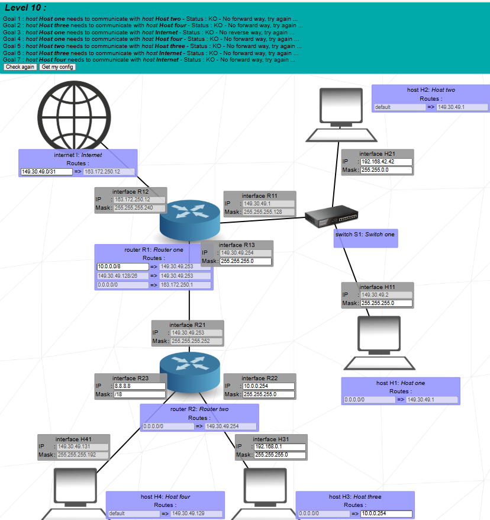
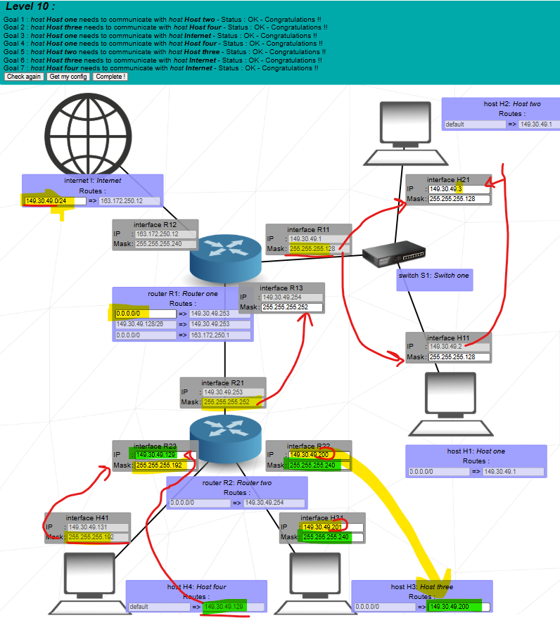

Goal: split the public block 149.30.49.0/24 into several subnets (/25, /26, /28, /30), put hosts H1–H4 behind two routers, and give them full internal + Internet access using summary routes.


All addresses come from 149.30.49.0/24. We must:
The key idea: we carve the /24 into smaller subnets, then use a summary route 149.30.49.128/25 on R1 to send all “R2-side” traffic to R2.
149.30.49.1 / 255.255.255.128 (/25, fixed).149.30.49.2 / 255.255.255.128.149.30.49.3 / 255.255.255.128.H1 and H2 are in the lower half of the /24 (0–127) and they share /25 with R11, so they talk directly through the switch.
Host routes:
149.30.49.131 / 255.255.255.192 (/26, fixed).149.30.49.129 / 255.255.255.192.H4 lives in the upper half of the /24 (128–191 range) with mask /26.
149.30.49.200 / 255.255.255.240 (/28).149.30.49.201 / 255.255.255.240.
/28 has blocks of 16 addresses (192–207, 208–223, …). We place H3 and R22 inside
149.30.49.192/28, which sits safely inside the upper half
(128–255) and does not overlap H1/H2’s /25.
149.30.49.253 / 255.255.255.252 (/30, fixed).149.30.49.254 / 255.255.255.252.Classic point-to-point /30 between the two routers, also inside the upper half of the /24.
R2 has three directly connected networks: H4’s /26, H3’s /28, and the /30 backbone. For all other destinations:
So H3 and H4 send their non-local traffic to R22/R23, then R2 forwards it to R1.
R1 connects three sides: H1/H2 LAN, backbone, and Internet (via R12). It knows directly connected:
149.30.49.0/25 (H1/H2 via R11).149.30.49.252/30 (backbone via R13).We add:
The summary 149.30.49.128/25 covers everything from 128 to 255:
H4’s /26, H3’s /28, and the /30 backbone. So any packet for those addresses
goes to R2; real Internet traffic uses the default route 0.0.0.0/0 via 163.172.250.1.
The Internet only needs to know how to reach the single public block:
Any reply to 149.30.49.x goes to R1. Then R1 either keeps it on the H1/H2 LAN or forwards it to R2 (for H3/H4) using 149.30.49.128/25.
Pure layer-2 communication inside the /25; R1 is just listening.
R2 routes internally between the /26 and /28 LANs behind it.
From R1’s point of view: everything ≥128 goes through the summary route to R2, everything in 0–127 stays local.
The Internet only knows 149.30.49.0/24 via R1; R1 uses the summary route to deliver replies to H3/H4, and direct connection for H1/H2.
“In Level 10 I start from the public block 149.30.49.0/24 and cut it into four pieces: a /25 (149.30.49.0/25) for H1 and H2 with gateway 149.30.49.1, a /26 (149.30.49.128/26) for H4 with gateway 149.30.49.129, a /28 (149.30.49.192/28) for H3 with gateway 149.30.49.200, and a /30 (149.30.49.252/30) as the point-to-point link between R1 and R2.”
“Each host has a default route toward its local router. R2 knows its three directly connected networks and has a default route 0.0.0.0/0 to R1 over the /30 backbone. On R1 I install a summarized static route 149.30.49.128/25 toward R2, which covers H4’s /26, H3’s /28 and the /30 link, and I keep the global default 0.0.0.0/0 toward 163.172.250.1 for Internet.”
“The Internet router only knows the aggregate 149.30.49.0/24 via R1, so all replies to any 149.30.49.x address return to R1. R1 then either sends them locally to H1/H2 or forwards them via the summary route to R2 for H3/H4. This way all four hosts can reach each other and access the Internet, and the routing table on R1 stays simple thanks to subnetting and summarization.”